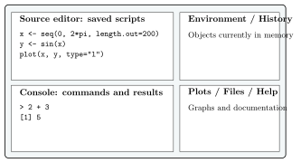
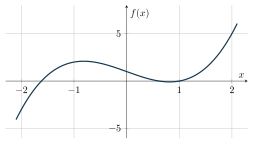
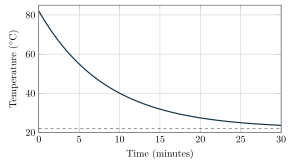

Introduction to R and RStudio
Purpose. This appendix assumes no previous programming experience. Its goal is not to turn you into a software developer; it is to help you use R as a reliable companion to mathematical reasoning. In this book, you will first learn and justify the calculus, then use code to explore examples, check calculations, produce figures, and investigate models.
By the end of this appendix, you should be able to: install and open R and RStudio; write and save an R script; distinguish the Console from the Source editor; create and manipulate variables, vectors, and functions; make labeled plots; approximate derivatives and integrals; solve simple numerical problems; import data; diagnose common errors; and prepare a reproducible report of your calculations.
What Are R and RStudio?
R is a programming language and environment for computation, graphics, and data analysis. It can calculate numbers, apply formulas to many inputs, draw mathematical functions, solve equations numerically, and analyze data. R is free and open source.
RStudio is an integrated development environment (IDE): an application that makes working with R easier. It offers a script editor, Console, plot viewer, file browser, help system, and project management tools. RStudio does not replace R: you install R first, then use RStudio to work with it. The RStudio IDE is distributed by Posit.

Figure A.1. Conceptual diagram of a common RStudio layout (not a screenshot). Pane locations can be customized.
A typical workflow: write commands in the Source editor, save the script, run a line or selection, inspect the result in the Console or Plots pane, revise if necessary, and rerun from the beginning to confirm reproducibility.
Installation and Your First Session
Visit https://cran.r-project.org/ and install a current version of R for your operating system.
Visit https://posit.co/download/rstudio-desktop/ and install RStudio Desktop. Installation pages and labels can change over time.
Open RStudio. Locate the Console and type
2 + 3, then press Enter.Create a script using File \(\rightarrow\) New File \(\rightarrow\) R Script. Save it as
appendix_a_practice.Rin a folder for this course.Type the following lines into the script and run them individually using the editor’s Run command (often Ctrl+Enter on Windows/Linux or Cmd+Enter on macOS).
<!-- -->Download code 2 + 3 sqrt(81) pi sin(pi / 2)
The first expression gives 5, the second gives 9, and
sin(pi / 2) is 1 to floating-point precision. R uses
pi for \(\pi\), not the
symbol typed directly into a formula.
A new script is not automatically saved. Running commands in the Console alone does not preserve your analysis. Save the script frequently.
The Console, Prompts, and Scripts
The Console usually displays > when it is ready for a
command. If you type an incomplete expression, R displays +
to request the rest of the command. This plus sign is a continuation
prompt, not a computed answer.
# This is a comment: R ignores everything after #.
(2 + 3) * 4For example, typing (2 + 3 without the closing
parenthesis will produce a continuation prompt. Finish the expression by
typing ) or cancel the unfinished command using the
Console’s interrupt/escape action.
Good habits. Give scripts descriptive filenames; add short comments explaining why a calculation is being done; use blank lines to separate sections; and keep all commands needed to reproduce a result in the same script or clearly referenced files.
Arithmetic, Objects, and Assignment
R supports addition +, subtraction -,
multiplication *, division /, powers
^, and parentheses. Multiplication must be written
explicitly: 2*x, not 2x.
3^2 # 9
(8 + 4) / 3 # 4
radius <- 5
area <- pi * radius^2
areaThe arrow <- assigns a value to a named object. Read
radius <- 5 as “store the number 5 under the name
radius.” The final line prints the value of area. R also
accepts = for many assignments, but this appendix
consistently uses <- to make assignment visually
distinct from mathematical equality.
Naming guidance. Use names such as
time, velocity, and total_area;
avoid spaces and names that conflict with built-in functions, such as
sum or c. R is case-sensitive:
Rate and rate are different objects.
Change radius to 7 and rerun the area calculation. Does
the stored value of area change automatically if you run
only the first assignment? Explain why not.
Numbers, Logical Values, and Missing Values
Most calculations in this book use numeric objects. R also has
logical values TRUE and FALSE, text strings in
quotation marks, and the special missing-value marker
NA.
3 < 5
abs(-7)
round(pi, 3)
value <- NA
is.na(value)Comparison operators include <, >,
<=, >=, == (equal to), and
!= (not equal to). The symbol == tests
equality; it does not assign a value.
Important distinction: NA means a value
is missing, NaN means a numerical result is undefined (for
example, 0/0), and Inf represents an infinite
numerical result. These values should not be silently treated as
ordinary data.
Vectors: Calculating at Many Inputs
A vector is an ordered collection of values. Vectors make R particularly useful for plotting and numerical calculus, because one expression can evaluate a function at hundreds of points.
t <- c(0, 1, 2, 3)
t^2
seq(0, 1, by = 0.25)
seq(0, 1, length.out = 6)
rep(2, times = 4)The function c() combines values. The function
seq() constructs a sequence; length.out
specifies the number of points, including endpoints. Arithmetic such as
t2̂ is applied element by element.
t <- seq(0, 4, by = 0.5)
s <- 3*t^2 - 2*t + 1
head(s) # First six values
length(s) # Number of values
s[1] # First entry, not entry zeroR indexing begins at 1, unlike Python indexing. Also, vector arithmetic can recycle shorter vectors; if their lengths do not match, a calculation may be misleading. For introductory work, make sure paired vectors have the same length.
A Riemann sum requires many sample points; a function graph requires many \((x,f(x))\) pairs. Vectors let you construct these objects without manually repeating a calculation.
Writing Mathematical Functions
In mathematics we write \(f(x)=x^3-2x+1\). In R we define a function
using function(x) followed by an expression or a block in
braces.
f <- function(x) {
x^3 - 2*x + 1
}
f(2)
f(c(0, 1, 2))This particular function is vectorized: it accepts either a
single number or a vector. The final expression is returned
automatically. For clarity, you can also write
return(x3̂ - 2*x + 1).
Functions with parameters. A model may depend on time \(t\) and constants that describe a physical system.
concentration <- function(t, initial = 18, rate = 0.3) {
2 + initial * exp(-rate * t)
}
concentration(0)
concentration(5)
concentration(c(0, 5, 10), rate = 0.2)Here initial and rate have default values.
The call concentration(5) uses those defaults; the last
call changes the decay rate explicitly.
Write an R function for \(g(x)=\sqrt{1+x^2}\). Evaluate it at \(-2\), 0, and 2. Explain why all outputs are positive.
Essential Mathematical Functions
| Mathematics | R expression | Example |
|---|---|---|
| \(\sqrt{x}\) | sqrt(x) |
sqrt(16) |
| \(|x|\) | abs(x) |
abs(-3) |
| \(e^x\) | exp(x) |
exp(1) |
| \(\ln x\) | log(x) |
log(exp(2)) |
| \(\log_{10}x\) | log10(x) |
log10(100) |
| \(\sin x\) | sin(x) |
sin(pi/6) |
| \(\cos x\) | cos(x) |
cos(pi) |
| \(\tan x\) | tan(x) |
tan(pi/4) |
| \(\arctan x\) | atan(x) |
atan(1) |
Angles are in radians. R’s trigonometric functions
interpret their arguments as radians, not degrees. Convert degrees by
multiplying by pi/180.
sin(30 * pi / 180) # Sine of 30 degrees = 0.5
log(100) # Natural logarithm, not log base 10
log10(100) # 2log(-1) returns NaN for real-number input;
sqrt(-1) does likewise. These are domain restrictions, not
software malfunctions.
Creating Clear Graphs in Base R
The simplest graph uses plot(). For a smooth
mathematical curve, create a dense vector of inputs, evaluate the
function, and use type = "l" (the letter ell, for
line).
x <- seq(-3, 3, length.out = 401)
y <- x^3 - 2*x + 1
plot(x, y, type = "l", lwd = 2,
main = "A cubic function",
xlab = "x", ylab = "f(x)")
abline(h = 0, v = 0, lty = 3)
grid()Reading the commands: main sets the
title; xlab and ylab label axes;
lwd controls line width; abline() adds
reference lines; and grid() adds a background grid. These
choices make a graph easier to interpret, not merely more
attractive.

Figure A.2. Original illustration of \(f(x)=x^3-2x+1\). Students can recreate this figure with the preceding R code.
Graphing two functions on the same axes
x <- seq(-2, 2, length.out = 401)
plot(x, x^2, type = "l", lwd = 2,
ylim = c(-1, 5), xlab = "x", ylab = "y")
lines(x, 2*x + 1, lty = 2, lwd = 2)
legend("topleft", legend = c("x^2", "2x + 1"),
lty = c(1, 2), lwd = 2, bty = "n")The function lines() adds a curve to the existing graph.
The ylim argument ensures both curves fit on the vertical
axis. Without a deliberate axis range, a second curve may be
clipped.
Graphing a function directly
curve(exp(-x), from = 0, to = 5,
xlab = "Time", ylab = "Relative amount",
main = "Exponential decay", lwd = 2)curve() is convenient when you already have an
expression in \(x\). The vector-based
approach is more flexible when plotting data, approximations, or model
comparisons.
Reading and Interpreting Numerical Output
A printed vector may begin with [1] or [7].
These bracketed numbers identify the index of the first displayed
element on that output line; they are not part of the data.
values <- c(4, 7, 10, 13)
mean(values)
sum(values)
min(values)
max(values)
round(mean(values), 2)R commonly prints many decimal places. round() controls
displayed numerical precision, but rounding intermediate steps can
reduce accuracy. Prefer to retain full precision during calculations and
round only when presenting results.
Numerical Limits: What a Table Can and Cannot Show
To explore \(\lim_{x\to 2}(x^2-4)/(x-2)\), evaluate the expression near 2, but not at 2.
f <- function(x) (x^2 - 4) / (x - 2)
h <- c(0.1, 0.01, 0.001, 0.0001)
left <- f(2 - h)
right <- f(2 + h)
data.frame(h, left, right)Both sides approach 4. Algebra explains why: for \(x\ne2\), \((x^2-4)/(x-2)=x+2\). At \(x=2\), the original expression is undefined, even though the limit exists.
Numerical evidence is not proof. A finite table samples only finitely many inputs. Floating-point rounding can also obscure behavior for extremely small \(h\). Use numerical work to form and test conjectures; use mathematical reasoning to establish the limit.
Numerical Differentiation
The derivative \(f'(a)\) is the limit of difference quotients. For a small nonzero step \(h\), the forward difference is \[D_h^{\mathrm{forward}}f(a)=\frac{f(a+h)-f(a)}{h}.\] An often more accurate approximation is the central difference, \[D_h^{\mathrm{central}}f(a)=\frac{f(a+h)-f(a-h)}{2h}.\]
f <- function(x) x^3 - 2*x + 1
a <- 1
h <- 0.01
forward <- (f(a + h) - f(a)) / h
central <- (f(a + h) - f(a - h)) / (2*h)
exact <- 3*a^2 - 2
c(forward = forward, central = central, exact = exact)For this example the exact derivative at \(a=1\) is 1. The central difference is generally closer than the forward difference when \(h\) is sufficiently small. However, smaller is not always better: extremely tiny \(h\) values can cause subtractive cancellation in floating-point arithmetic.
A reusable derivative function
central_diff <- function(f, x, h = 1e-4) {
(f(x + h) - f(x - h)) / (2*h)
}
central_diff(function(x) sin(x), pi/3)
cos(pi/3)This function approximates a derivative at a point. It does not replace a symbolic derivative proof. It is especially useful when checking a complicated analytical expression.
Riemann Sums and Numerical Integration
Suppose \(f\) is continuous on \([a,b]\). A midpoint Riemann sum with \(n\) equal subintervals uses \(\Delta x=(b-a)/n\) and midpoints \(x_i^*=a+(i-\tfrac12)\Delta x\): \[M_n=\sum_{i=1}^n f(x_i^*)\Delta x.\]
midpoint_sum <- function(f, a, b, n = 100) {
dx <- (b - a) / n
midpoints <- a + ((1:n) - 0.5) * dx
sum(f(midpoints)) * dx
}
f <- function(x) x^2
midpoint_sum(f, 0, 2, n = 10)
midpoint_sum(f, 0, 2, n = 1000)
8/3 # Exact integralThe midpoint approximation approaches \(8/3\), the exact value of \(\int_0^2 x^2\,dx\). The 1:n
expression is suitable here because \(n\) is assumed to be a positive integer. In
reusable software, validate inputs before constructing sequences.
Built-in adaptive integration
Base R provides integrate() for one-dimensional
numerical integration.
f <- function(x) exp(-x^2)
result <- integrate(f, lower = 0, upper = 1)
result$value
result$abs.errorThe output contains a numerical estimate and an estimated absolute error. An error estimate is not an algebraic proof of the answer; accuracy depends on the function and numerical method. In particular, some improper or highly oscillatory integrals require special care.
The function supplied to integrate() must accept a
vector of inputs and return a vector of the corresponding outputs.
Ordinary arithmetic and built-in functions are usually vectorized, but
some custom functions are not.
Solving Equations Numerically
In calculus, equations such as \(e^{-t}=0.2\) describe threshold times. Base
R’s uniroot() locates a root of a continuous function over
a specified interval when the endpoint values have opposite signs.
f <- function(t) exp(-t) - 0.2
solution <- uniroot(f, interval = c(0, 5))
solution$root
-log(0.2) # Exact comparisonBefore using a root finder: define the equation as \(f(x)=0\); choose an interval that is meaningful for the application; check for a sign change; and verify the reported root by substituting it back into the original equation.
A numerical solution is often the most practical way to find a threshold when an equation cannot be rearranged into an elementary closed form.
Working with Data Frames and CSV Files
A data frame is a rectangular table in which columns can represent variables and rows can represent observations. For example, a small synthetic cooling dataset might be:
time <- c(0, 2, 4, 6, 8)
temperature <- c(82, 68, 58, 50, 44)
cooling <- data.frame(time, temperature)
print(cooling)
plot(cooling$time, cooling$temperature,
xlab = "Time (min)", ylab = "Temperature (C)",
pch = 19)The dollar sign selects a named column: cooling$time
means the time column of cooling. To load an
existing comma-separated file, use:
# Run only after saving a file with this name in the project folder.
measurements <- read.csv("measurements.csv")
head(measurements)
str(measurements)If the file cannot be found, inspect the project’s working directory and the filename. Prefer an RStudio Project and project-relative filenames to hard-coded computer-specific paths. For this appendix, the data are created in code so that no external file is required.
A First Modeling Example: Exponential Cooling
Newton’s cooling model can be written \[T(t)=T_a+(T_0-T_a)e^{-kt},\qquad k>0,\] where \(T_a\) is ambient temperature, \(T_0\) is initial temperature, and \(k\) is a cooling-rate parameter. Differentiating gives \[T'(t)=-k(T_0-T_a)e^{-kt}=-k\bigl(T(t)-T_a\bigr).\] The derivative is negative when \(T_0>T_a\), and the temperature approaches \(T_a\) as \(t\to\infty\).
ambient <- 22
initial <- 82
k <- 0.12
Tmodel <- function(t) ambient + (initial - ambient)*exp(-k*t)
time <- seq(0, 30, length.out = 301)
plot(time, Tmodel(time), type = "l", lwd = 2,
xlab = "Time (min)", ylab = "Temperature (C)",
main = "Cooling model")
abline(h = ambient, lty = 2)
Figure A.3. A model temperature approaches the ambient temperature without crossing it.
Interpretation matters. A model parameter has units: here \(k\) is measured in inverse minutes. Without units, it is easy to compare incompatible rates or misinterpret a numerical result.
Loops and Conditional Statements
Many calculations can be performed directly on vectors, but loops are useful when a calculation must be repeated in a sequence of steps.
for (n in c(10, 100, 1000)) {
estimate <- midpoint_sum(function(x) x^2, 0, 2, n)
cat("n =", n, ": estimate =", round(estimate, 6), "\n")
}The braces enclose the commands repeated for each value of
n. The function cat() prints a readable
message; "
n" starts a new line.
error <- abs(estimate - 8/3)
if (error < 0.001) {
cat("The approximation meets the tolerance.\n")
} else {
cat("Increase the number of subintervals.\n")
}A conditional statement chooses between actions based on a logical
test. Notice that if expects a single TRUE or
FALSE value, not a vector of many logical values.
Debugging: Understanding Error Messages
When code fails, read the error message carefully and identify the first line that caused the problem. Common issues include:
Object not found: a variable was misspelled, not created, or created only in an earlier session.
Unexpected symbol: a missing comma, operator, or closing parenthesis makes the command syntactically invalid.
Non-numeric argument: a text value was used where arithmetic requires numbers.
Wrong domain: a function was evaluated outside its real domain, producing
NaNor a warning.File not found: the working directory or filename is incorrect.
Blank or clipped graph: the plotted range is inappropriate or the output contains non-finite values.
A debugging checklist: run the script from the top;
print intermediate values; check length(),
class(), and str(); simplify the problem;
compare with a hand calculation; and change only one issue at a
time.
Reproducible Work and Project Organization
For each chapter project, create a folder containing the script, any needed input data, and the final figures. A simple structure is:
chapter_project/
analysis.R
data/
figures/
notes.txtIn RStudio, creating an RStudio Project helps keep related files together. The analysis should be rerunnable from a fresh R session without relying on objects created manually in the Console.
Saving a figure
png("cooling_curve.png", width = 1000, height = 700,
res = 140)
plot(time, Tmodel(time), type = "l", lwd = 2,
xlab = "Time (min)", ylab = "Temperature (C)")
abline(h = ambient, lty = 2)
dev.off()The png() command opens an image device; subsequent
plotting commands draw into that file. dev.off() closes the
device and completes the image. Ensure the output directory exists
before saving into a subfolder.
Reporting an answer professionally
A complete computational answer includes the mathematical model, parameter values and units, the method, the numerical result, and a brief interpretation. Avoid reporting a number without explaining what it means.
target <- 40
threshold <- uniroot(function(t) Tmodel(t) - target,
interval = c(0, 30))$root
cat("The model reaches", target, "C at about",
round(threshold, 2), "minutes.\n")The code above assumes the target temperature lies between the
initial and modeled temperature at 30 minutes. Check the interval before
running uniroot() for a different target.
Guided Laboratory A1: A Derivative and Its Tangent Line
Question. For \(f(x)=x^3-3x+2\), find the tangent line at \(x=2\) and compare it with the graph.
Mathematics first. Since \(f'(x)=3x^2-3\), we have \(f(2)=4\) and \(f'(2)=9\). The tangent line is \(L(x)=4+9(x-2)\).
f <- function(x) x^3 - 3*x + 2
L <- function(x) 4 + 9*(x - 2)
x <- seq(1.2, 2.6, length.out = 300)
plot(x, f(x), type = "l", lwd = 2,
xlab = "x", ylab = "y",
main = "Function and tangent line")
lines(x, L(x), lty = 2, lwd = 2)
points(2, 4, pch = 19)
legend("topleft", c("f(x)", "Tangent at x=2"),
lty = c(1, 2), lwd = 2, bty = "n")
central_diff(f, 2)Reflect. How does the tangent line’s approximation error change as you move farther from \(x=2\)? Explain using the curvature of the cubic.
Guided Laboratory A2: Accumulation from a Rate
Question. A system receives fluid at rate \(q(t)=3+0.4t\) liters per minute for \(0\le t\le10\). Estimate the total amount received and verify it analytically.
Mathematics first. \[Q=\int_0^{10}(3+0.4t)\,dt=\left[3t+0.2t^2\right]_0^{10}=50\text{ liters}.\]
q <- function(t) 3 + 0.4*t
midpoint_sum(q, 0, 10, n = 20)
integrate(q, 0, 10)$valueReflect. Why does multiplying rate (liters/minute) by time (minutes) yield liters? How would the integral change if the rate could be negative?
Guided Laboratory A3: Threshold Time and Model Checking
Question. For the cooling model introduced earlier in this appendix, find when the temperature reaches \(40^\circ\)C. Compare numerical and analytical solutions.
Mathematics first. Solve \(40=22+60e^{-0.12t}\), so \(e^{-0.12t}=0.3\) and \[t=-\frac{\ln(0.3)}{0.12}\approx 10.03\text{ minutes}.\]
analytic_time <- -log(0.3) / 0.12
numeric_time <- uniroot(function(t) Tmodel(t) - 40,
interval = c(0, 30))$root
c(analytic = analytic_time, numerical = numeric_time)
Tmodel(numeric_time)Reflect. If the ambient temperature were higher than \(40^\circ\)C, would this cooling model ever reach \(40^\circ\)C? Explain before changing the code.
Quick Reference: R Commands Used in This Book
| Command | Purpose |
|---|---|
| Command | Purpose |
<- |
Assign a value to a name |
c(...) |
Combine values into a vector |
seq(...) |
Create equally spaced input values |
length(x) |
Count elements in a vector |
function(x) |
Define a reusable mathematical function |
sqrt, exp, log |
Square root, exponential, natural logarithm |
sin, cos, tan |
Trigonometric functions using radians |
plot, lines, curve |
Create and extend graphs |
abline, legend, grid |
Add reference lines, labels, and grid |
sum, mean, round |
Summarize and format numerical results |
integrate(f,a,b) |
Numerically estimate a definite integral |
uniroot(f, interval) |
Locate a root on a sign-changing interval |
data.frame(...) |
Construct a rectangular data table |
read.csv(...) |
Import comma-separated data |
head, str, class |
Inspect the structure of an object |
cat(...) |
Print explanatory text and results |
png(...), dev.off() |
Save a plot to an image file |
Practice Exercises
Part I: First steps
Evaluate \(\sqrt{49}+3^2\) in R. Compare with a hand calculation.
Create a variable
heightequal to 2.5 and compute the volume of a cube with that side length. Label the units.Construct 11 equally spaced numbers between \(-1\) and 1. Print the first, middle, and last entries.
Define \(f(x)=2x^2-5x+1\) as an R function. Evaluate \(f(-1)\), \(f(0)\), and \(f(3)\).
Explain the difference between
=and==in typical R code. Explain why2xis invalid syntax.Evaluate \(\sin(60^\circ)\) correctly using radians. Explain why
sin(60)gives a different result.
Part II: Graphs and calculus
Plot \(f(x)=x^2-4x+3\) on \([-1,5]\). Add the horizontal axis and label both intercepts.
Plot \(\sin x\) and \(\cos x\) on \([0,2\pi]\) with distinct line styles and a legend.
Create a numerical table for \(\lim_{x\to1}(x^2-1)/(x-1)\), approaching from both sides. Explain why the expression is undefined at 1.
Use
central_diff()to estimate the derivative of \(\ln x\) at \(x=2\). Compare with the exact derivative.Approximate \(\int_0^1(1+x^2)\,dx\) with midpoint sums using \(n=10,100,1000\). Compare with \(4/3\).
Use
integrate()to estimate \(\int_0^2e^{-x^2}\,dx\). Explain why numerical integration is useful here.Use
uniroot()to solve \(x^3-x-1=0\) on \([1,2]\). Verify the residual by evaluating the function at the reported root.For \(s(t)=t^3-6t^2+9t\), plot position and approximate velocity. Identify when the particle changes direction and justify analytically.
Part III: Modeling and reproducibility
Modify the cooling model to use \(T_a=18\), \(T_0=75\), and \(k=0.08\). Plot it and estimate the time to reach \(30^\circ\)C.
Create a data frame of time values \(0,1,\ldots,10\) and their modeled temperatures from Exercise A.15. Explain the meaning of each column.
Save a graph as a PNG. Close and reopen RStudio, rerun the saved script, and verify that the graph can be recreated.
Deliberately create a syntax error, an undefined-object error, and a domain error. Record the message and explain how to correct each one.
Write a short paragraph reporting a numerical integral, including its mathematical definition, units, numerical method, and interpretation.
Explain why a numerical derivative can become less accurate when \(h\) is made extremely small. Investigate several values of \(h\) experimentally.
Mini-Project: A Reproducible Calculus Investigation
Scenario. A quantity is modeled by \[M(t)=5+30e^{-0.25t},\qquad 0\le t\le20,\] where \(M\) is measured in milligrams and \(t\) in hours. The formula is a simplified model intended for learning, not a clinical dosing recommendation.
Identify the initial quantity and long-run level, and justify them mathematically.
Derive \(M'(t)\) and explain its sign and units.
Plot \(M(t)\) with labeled axes and a horizontal line at the long-run level.
Use central differences to estimate \(M'(4)\) and compare with the exact derivative.
Find analytically and numerically the time when \(M(t)=10\) mg.
Evaluate \(\int_0^{20}M(t)\,dt\) analytically and numerically. State the units and explain why the integral is not itself a single measurement of \(M\).
Prepare a single R script that reproduces all computations and saves the graph. Include a short written interpretation and at least two limitations of the model.
Suggested assessment (100 points): mathematical reasoning (30), correct and readable R code (25), graph quality and units (15), numerical verification (15), interpretation and limitations (15).
Closing Perspective
R is most valuable when it supports rather than replaces mathematical understanding. A plot can suggest a limit but cannot prove it. A numerical derivative can check a symbolic result but does not explain the differentiation rule. A numerical integral can estimate accumulation but must be interpreted with units and assumptions. As you progress through this book, follow the same habit: reason mathematically, compute carefully, visualize clearly, and explain what the result means.